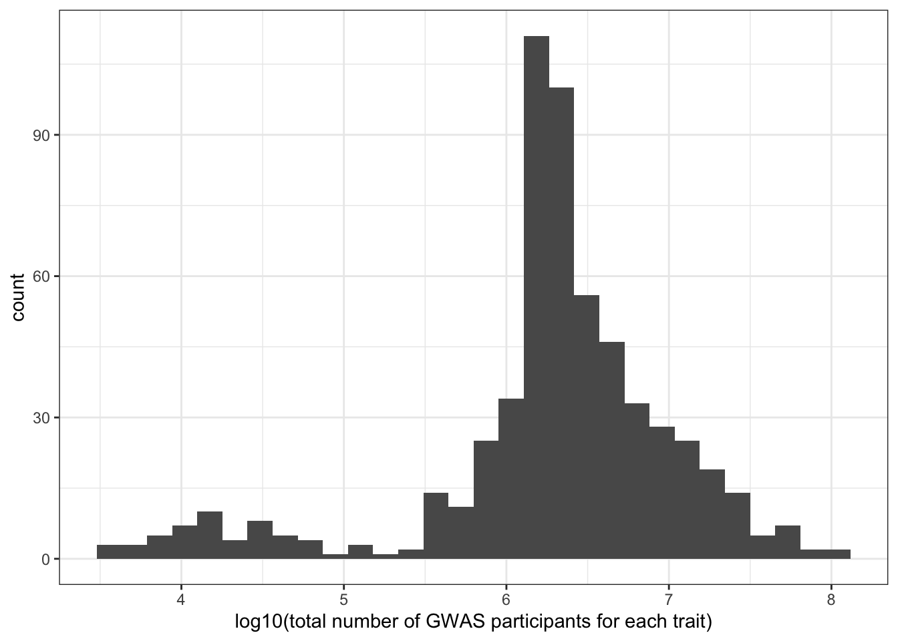
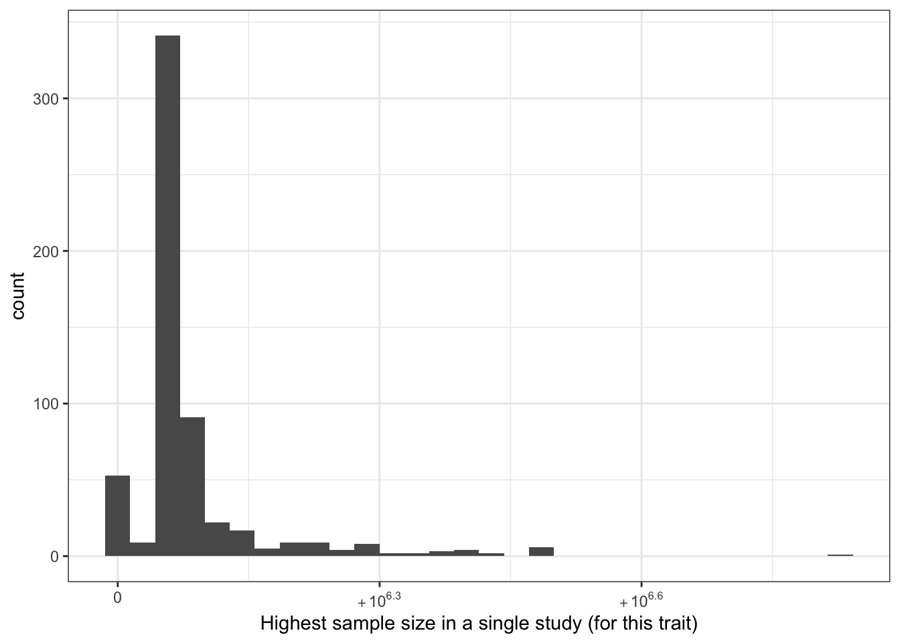

Disease investigated by ancestry
Last updated: 2025-09-25
Checks: 7 0
Knit directory:
genomics_ancest_disease_dispar/
This reproducible R Markdown analysis was created with workflowr (version 1.7.1). The Checks tab describes the reproducibility checks that were applied when the results were created. The Past versions tab lists the development history.
Great! Since the R Markdown file has been committed to the Git repository, you know the exact version of the code that produced these results.
Great job! The global environment was empty. Objects defined in the global environment can affect the analysis in your R Markdown file in unknown ways. For reproduciblity it’s best to always run the code in an empty environment.
The command set.seed(20220216) was run prior to running
the code in the R Markdown file. Setting a seed ensures that any results
that rely on randomness, e.g. subsampling or permutations, are
reproducible.
Great job! Recording the operating system, R version, and package versions is critical for reproducibility.
Nice! There were no cached chunks for this analysis, so you can be confident that you successfully produced the results during this run.
Great job! Using relative paths to the files within your workflowr project makes it easier to run your code on other machines.
Great! You are using Git for version control. Tracking code development and connecting the code version to the results is critical for reproducibility.
The results in this page were generated with repository version c5ee886. See the Past versions tab to see a history of the changes made to the R Markdown and HTML files.
Note that you need to be careful to ensure that all relevant files for
the analysis have been committed to Git prior to generating the results
(you can use wflow_publish or
wflow_git_commit). workflowr only checks the R Markdown
file, but you know if there are other scripts or data files that it
depends on. Below is the status of the Git repository when the results
were generated:
Ignored files:
Ignored: .DS_Store
Ignored: .Rproj.user/
Ignored: data/.DS_Store
Ignored: data/gbd/.DS_Store
Ignored: data/gbd/IHME-GBD_2021_DATA-d8cf695e-1.csv
Ignored: data/gbd/ihme_gbd_2019_global_disease_burden_rate_all_ages.csv
Ignored: data/gbd/ihme_gbd_2019_global_paf_rate_percent_all_ages.csv
Ignored: data/gbd/ihme_gbd_2021_global_disease_burden_rate_all_ages.csv
Ignored: data/gbd/ihme_gbd_2021_global_paf_rate_percent_all_ages.csv
Ignored: data/gwas_catalog/
Ignored: data/icd/.DS_Store
Ignored: data/icd/IHME_GBD_2019_COD_CAUSE_ICD_CODE_MAP_Y2020M10D15.XLSX
Ignored: data/icd/IHME_GBD_2019_NONFATAL_CAUSE_ICD_CODE_MAP_Y2020M10D15.XLSX
Ignored: data/icd/IHME_GBD_2021_COD_CAUSE_ICD_CODE_MAP_Y2024M05D16.XLSX
Ignored: data/icd/IHME_GBD_2021_NONFATAL_CAUSE_ICD_CODE_MAP_Y2024M05D16.XLSX
Ignored: data/icd/cdc_valid_icd10_Sep_23_2025.xlsx
Ignored: data/icd/cdc_valid_icd9_Sep_23_2025.xlsx
Ignored: data/icd/~$IHME_GBD_2021_COD_CAUSE_ICD_CODE_MAP_Y2024M05D16.XLSX
Ignored: data/icd/~$IHME_GBD_2021_NONFATAL_CAUSE_ICD_CODE_MAP_Y2024M05D16.XLSX
Ignored: data/who/
Ignored: output/gwas_cat/
Ignored: output/gwas_study_info_cohort_corrected.csv
Ignored: output/gwas_study_info_trait_corrected.csv
Ignored: output/gwas_study_info_trait_ontology_info.csv
Ignored: output/gwas_study_info_trait_ontology_info_l1.csv
Ignored: output/gwas_study_info_trait_ontology_info_l2.csv
Ignored: output/trait_ontology/
Ignored: renv/
Untracked files:
Untracked: analysis/garbage_icd_codes.Rmd
Unstaged changes:
Modified: analysis/exclude_infectious_diseases.Rmd
Modified: analysis/other_disease_filtering.Rmd
Modified: data/icd/README.md
Note that any generated files, e.g. HTML, png, CSS, etc., are not included in this status report because it is ok for generated content to have uncommitted changes.
These are the previous versions of the repository in which changes were
made to the R Markdown
(analysis/disease_inves_by_ancest.Rmd) and HTML
(docs/disease_inves_by_ancest.html) files. If you’ve
configured a remote Git repository (see ?wflow_git_remote),
click on the hyperlinks in the table below to view the files as they
were in that past version.
| File | Version | Author | Date | Message |
|---|---|---|---|---|
| html | deb5743 | IJbeasley | 2025-09-17 | Build site. |
| Rmd | df34d71 | IJbeasley | 2025-09-17 | More fixing up of disease grouping |
| html | 79e26e5 | IJbeasley | 2025-09-11 | Build site. |
| Rmd | 7f2a8f7 | IJbeasley | 2025-09-11 | Add more global burden vs. dalys plots |
| html | fb089b4 | IJbeasley | 2025-09-11 | Build site. |
| Rmd | 708d5b3 | IJbeasley | 2025-09-11 | Add GBD data to disease gwas ancestry investigation |
| html | 437885b | IJbeasley | 2025-08-25 | Build site. |
| Rmd | 31e868c | IJbeasley | 2025-08-25 | Update proportion euro invest for updated disease categories |
| html | 3d94889 | IJbeasley | 2025-08-23 | Build site. |
| Rmd | 48dd80a | IJbeasley | 2025-08-23 | Update proportion ancestry investigated by disease |
| html | 42e854b | IJbeasley | 2025-08-21 | Build site. |
| Rmd | fa9a4da | IJbeasley | 2025-08-21 | Starting test of relationship between proportion european and total sample size |
| html | f5087d2 | IJBeasley | 2025-07-30 | Build site. |
| Rmd | 72172e3 | IJBeasley | 2025-07-30 | Split page into disease by ancest |
| html | 2fd5755 | Isobel Beasley | 2022-02-16 | Build site. |
| Rmd | 7347b5d | Isobel Beasley | 2022-02-16 | Add initial plotting using gwas cat stats |
1 Set up
library(dplyr)
library(data.table)
library(ggplot2)
source(here::here("code/custom_plotting.R"))1.1 Load data
# gwas_study_info = data.table::fread("data/gwas_catalog/gwas-catalog-v1.0.3-studies-r2022-02-02.tsv",
# sep = "\t",
# quote = "")
# gwas_study_info <- fread(here::here("output/gwas_study_info_trait_corrected.csv"))
gwas_study_info <- fread(here::here("output/gwas_cat/gwas_study_info_trait_group_l2.csv"))
gwas_ancest_info <- fread(here::here("data/gwas_catalog/gwas-catalog-v1.0.3.1-ancestries-r2025-07-21.tsv"),
sep = "\t",
quote = "")1.2 Basic data cleaning
# fixing the column names
gwas_study_info = gwas_study_info |>
dplyr::rename_with(~ gsub(" ", "_", .x))
gwas_ancest_info = gwas_ancest_info |>
dplyr::rename_with(~ gsub(" ", "_", .x))
# making sure arranged by DATE (oldest at the top)
gwas_ancest_info = gwas_ancest_info |>
dplyr::arrange(DATE)
gwas_study_info = gwas_study_info |>
dplyr::arrange(DATE)1.3 NA for number of individuals
# 44 studies / 44 rows
gwas_ancest_info |>
dplyr::filter(is.na(NUMBER_OF_INDIVIDUALS)) |>
nrow()[1] 44# from only 24 gwas papers
gwas_ancest_info |>
dplyr::filter(is.na(NUMBER_OF_INDIVIDUALS)) |>
select(PUBMED_ID) |>
distinct() |>
nrow()[1] 24gwas_ancest_info |>
dplyr::filter(PUBMED_ID == 28679651) |>
select(INITIAL_SAMPLE_DESCRIPTION,
REPLICATION_SAMPLE_DESCRIPTION,
BROAD_ANCESTRAL_CATEGORY) |>
distinct() INITIAL_SAMPLE_DESCRIPTION REPLICATION_SAMPLE_DESCRIPTION
<char> <char>
1: 404 cases, controls <NA>
2: 194 cases, controls <NA>
3: 426 cases, controls <NA>
4: 85 cases, controls <NA>
5: 535 cases, controls <NA>
6: 345 cases, controls <NA>
7: 835 cases, controls <NA>
8: 844 cases, controls <NA>
9: 447 cases, controls <NA>
BROAD_ANCESTRAL_CATEGORY
<char>
1: NR
2: NR
3: NR
4: NR
5: NR
6: NR
7: NR
8: NR
9: NR# 28679651 - problem seems to be that number of controls per disease not specifically listed
# see https://pubmed.ncbi.nlm.nih.gov/28679651/
# although paper they cite as where data comes from (https://www.nature.com/articles/leu2016387#Tab1)
# discloses: 1229 AL amyloidosis patients from Germany, UK and Italy, and 7526 healthy local controls1.3.1 Filter out NA number of individuals
gwas_ancest_info =
gwas_ancest_info |>
dplyr::filter(!is.na(NUMBER_OF_INDIVIDUALS))1.4 Set up - add trait information to ancestry information
gwas_ancest_info =
left_join(
gwas_ancest_info,
gwas_study_info |> select(STUDY_ACCESSION,
COHORT,
MAPPED_TRAIT,
DISEASE_STUDY,
MAPPED_TRAIT_CATEGORY,
BACKGROUND_TRAIT_CATEGORY,
l2_all_disease_terms),
by = "STUDY_ACCESSION"
)
gwas_ancest_info = gwas_ancest_info |> filter(DISEASE_STUDY == T)2 Top traits
2.1 Top traits by number of pubmed ids - including non-disease traits
The traits with the most number of pubmed ids are:
n_studies_trait = gwas_study_info |>
dplyr::select(MAPPED_TRAIT, MAPPED_TRAIT_URI, PUBMED_ID) |>
dplyr::mutate(MAPPED_TRAIT = stringr::str_split(MAPPED_TRAIT, ",\\s*")) |>
tidyr::unnest_longer(MAPPED_TRAIT) |>
dplyr::distinct() |>
dplyr::group_by(MAPPED_TRAIT, MAPPED_TRAIT_URI) |>
dplyr::summarise(n_studies = dplyr::n()) |>
dplyr::arrange(desc(n_studies))`summarise()` has grouped output by 'MAPPED_TRAIT'. You can override using the
`.groups` argument.head(n_studies_trait)# A tibble: 6 × 3
# Groups: MAPPED_TRAIT [6]
MAPPED_TRAIT MAPPED_TRAIT_URI n_studies
<chr> <chr> <int>
1 high density lipoprotein cholesterol measurement http://www.ebi.ac.… 134
2 body mass index http://www.ebi.ac.… 133
3 triglyceride measurement http://www.ebi.ac.… 129
4 low density lipoprotein cholesterol measurement http://www.ebi.ac.… 119
5 type 2 diabetes mellitus http://purl.obolib… 118
6 total cholesterol measurement http://www.ebi.ac.… 1032.2 Top traits by number of pubmed ids - disease traits only
n_studies_trait = gwas_study_info |>
dplyr::filter(DISEASE_STUDY == T) |>
dplyr::select(l2_all_disease_terms, PUBMED_ID) |>
dplyr::mutate(l2_all_disease_terms = stringr::str_split(l2_all_disease_terms, ",\\s*")) |>
tidyr::unnest_longer(l2_all_disease_terms) |>
dplyr::distinct() |>
dplyr::group_by(l2_all_disease_terms) |>
dplyr::summarise(n_studies = dplyr::n()) |>
dplyr::arrange(desc(n_studies))
head(n_studies_trait)# A tibble: 6 × 2
l2_all_disease_terms n_studies
<chr> <int>
1 "other mental disorders" 221
2 "diabetes mellitus type 2" 192
3 "depressive disorders" 173
4 "other cardiovascular and circulatory diseases" 171
5 "" 168
6 "alzheimer's disease and other dementias" 163dim(n_studies_trait)[1] 1181 23 Make ancestry groups
Here we make the column ‘ancestry_group’ in the gwas_study_info datasets, ‘ancestry_group’ defines the broad ancestry group (like in Martin et al. 2019, European, Greater Middle Eastern etc.) that each group of individuals belongs to.
grouped_ancest = vector()
broad_ancest_cat = unique(gwas_ancest_info$BROAD_ANCESTRAL_CATEGORY)
for(study_ancest in broad_ancest_cat){
grouped_ancest[study_ancest] = group_ancestry_fn(study_ancest)
}
grouped_ancest_map = data.frame(ancestry_group = grouped_ancest,
BROAD_ANCESTRAL_CATEGORY = broad_ancest_cat
)
print("See some example mappings between BROAD_ANCESTRAL_CATEGORY and ancestry_group")[1] "See some example mappings between BROAD_ANCESTRAL_CATEGORY and ancestry_group"print(dplyr::slice_sample(grouped_ancest_map, n = 5)) ancestry_group
European European
European, African unspecified Multiple
European, Hispanic or Latin American, African unspecified, Asian unspecified Multiple
East Asian Asian
European, Asian unspecified, African American or Afro-Caribbean, Greater Middle Eastern (Middle Eastern, North African or Persian), Oceanian, Native American, Other, Other admixed ancestry Multiple
BROAD_ANCESTRAL_CATEGORY
European European
European, African unspecified European, African unspecified
European, Hispanic or Latin American, African unspecified, Asian unspecified European, Hispanic or Latin American, African unspecified, Asian unspecified
East Asian East Asian
European, Asian unspecified, African American or Afro-Caribbean, Greater Middle Eastern (Middle Eastern, North African or Persian), Oceanian, Native American, Other, Other admixed ancestry European, Asian unspecified, African American or Afro-Caribbean, Greater Middle Eastern (Middle Eastern, North African or Persian), Oceanian, Native American, Other, Other admixed ancestrygwas_ancest_info = dplyr::left_join(
gwas_ancest_info,
grouped_ancest_map,
by = "BROAD_ANCESTRAL_CATEGORY")
gwas_ancest_info = gwas_ancest_info |>
dplyr::mutate(ancestry_group = factor(ancestry_group, levels = ancestry_levels))3.1 Check: How many individuals in each ancestry group?
Expecting highest to be in European
total_gwas_n =
gwas_ancest_info$NUMBER_OF_INDIVIDUALS |> sum(na.rm = T)
print("Total numbers (in millions) per ancestry group")[1] "Total numbers (in millions) per ancestry group"gwas_ancest_info |>
dplyr::group_by(ancestry_group) |>
dplyr::summarise(n = sum(NUMBER_OF_INDIVIDUALS, na.rm = TRUE)/10^6) |>
dplyr::mutate(prop = n* 10^6/total_gwas_n) |>
dplyr::arrange(desc(n)) # A tibble: 9 × 3
ancestry_group n prop
<fct> <dbl> <dbl>
1 European 5064. 0.865
2 African 316. 0.0539
3 Asian 150. 0.0256
4 Hispanic/Latin American 135. 0.0231
5 Not reported 118. 0.0201
6 Multiple 71.8 0.0123
7 Other 0.755 0.000129
8 Middle Eastern 0.295 0.0000503
9 Oceanic 0.0388 0.000006623.2 Plot number of individuals per ancestry group over time
gwas_ancest_info |>
dplyr::group_by(ancestry_group) |>
dplyr::mutate(ancest_cumsum = cumsum(as.numeric(NUMBER_OF_INDIVIDUALS))) |>
add_final_totals() |>
# select(DATE, ancest_cumsum, ancestry_group, NUMBER_OF_INDIVIDUALS) |>
ggplot(aes(x=DATE,
y=ancest_cumsum/(10^6),
fill = ancestry_group
)
) +
geom_area(position = 'stack') +
scale_x_date(date_labels = '%Y',
date_breaks = "2 years"
) +
theme_classic() +
labs(x = "Year",
y = "Individuals in GWAS catalog (millions)") +
scale_fill_manual(values = ancestry_colors, name='Ancestry group') 
4 Plot number of individuals per ancestry group for a single trait
4.1 Select trait
gwas_ancest_info_plot =
gwas_ancest_info %>%
filter(!is.na(NUMBER_OF_INDIVIDUALS)) |>
filter(MAPPED_TRAIT == 'high density lipoprotein cholesterol measurement')
print("Total numbers (in millions) per ancestry group - for high density lipoprotein cholesterol measurement")[1] "Total numbers (in millions) per ancestry group - for high density lipoprotein cholesterol measurement"gwas_ancest_info_plot %>%
group_by(ancestry_group) %>%
summarise(n = sum(NUMBER_OF_INDIVIDUALS, na.rm = TRUE)/10^6)# A tibble: 4 × 2
ancestry_group n
<fct> <dbl>
1 European 0.00310
2 African 0.00319
3 Multiple 0.00255
4 Not reported 0.001044.2 Plot
gwas_ancest_info_plot =
gwas_ancest_info_plot %>%
group_by(ancestry_group) %>%
mutate(ancest_cumsum = cumsum(as.numeric(NUMBER_OF_INDIVIDUALS)))
gwas_ancest_info_plot = add_final_totals(gwas_ancest_info_plot)
gwas_ancest_info_plot |>
ggplot(aes(x=DATE, y=ancest_cumsum/(10^6), fill = ancestry_group)) +
geom_area(position = 'stack') +
scale_x_date(date_labels = '%Y', date_breaks = "1 years") +
theme_classic() +
labs(x = "Year", y = "Individuals in GWAS catalog (millions)") +
scale_fill_manual(values = ancestry_colors, name='Ancestry group')
5 Calculate Per Trait: Proportion European, Number of studies, Total number of individuals, Highest sample size in a single study
5.1 Proportion European overall
euro_n = gwas_ancest_info |>
filter(ancestry_group == "European") |>
pull(NUMBER_OF_INDIVIDUALS) |>
sum(na.rm = T)
total_n = gwas_ancest_info |>
pull(NUMBER_OF_INDIVIDUALS) |>
sum(na.rm = T)
100 * euro_n / total_n[1] 86.480425.2 Proportion European per trait
gwas_ancest_trait_info = gwas_ancest_info |>
dplyr::filter(DISEASE_STUDY == T) |>
dplyr::select(l2_all_disease_terms,
PUBMED_ID, ancestry_group, NUMBER_OF_INDIVIDUALS) |>
dplyr::mutate(l2_all_disease_terms = stringr::str_split(l2_all_disease_terms, ",\\s*")) |>
tidyr::unnest_longer(l2_all_disease_terms) |>
dplyr::distinct()
n_studies_trait = n_studies_trait |>
dplyr::filter(n_studies > 2) |>
dplyr::filter(l2_all_disease_terms != "")
total_n_euro_vec = vector()
prop_euro_vec = vector()
med_prop_euro_vec = vector()
first_quartile_prop_euro_vec = vector()
total_n_vec = vector()
med_sample_size_vec = vector()
n_studies_vec = vector()
highest_sample_size_vec = vector()
for(trait in n_studies_trait$l2_all_disease_terms){
# Calculate the number of European ancestry individuals (studied for this trait)
total_euro_n = gwas_ancest_trait_info |>
filter(ancestry_group == "European") |>
filter(l2_all_disease_terms %in% trait) |>
pull(NUMBER_OF_INDIVIDUALS) |>
sum(na.rm = T)
total_n_euro_vec[trait] = total_euro_n
# Calculate the total number of individuals (studied for this trait)
all_study_n = gwas_ancest_trait_info |>
filter(l2_all_disease_terms %in% trait) |>
pull(NUMBER_OF_INDIVIDUALS)
total_n = all_study_n |>
sum(na.rm = T)
total_n_vec[trait] = total_n
# Get the highest sample size in a single study (for this trait)
highest_sample_size = max(all_study_n, na.rm = T)
highest_sample_size_vec[trait] = highest_sample_size
# Get the median sample size in a single study (for this trait)
med_sample_size_vec[trait] = median(all_study_n, na.rm = T)
# Calculate the proportion of European ancestry individuals (across all studies for this trait)
prop_euro_vec[trait] = 100 * total_euro_n / total_n
# Calculate the number of unique studies (pubmed ids) for this trait
n_studies = gwas_ancest_trait_info |>
filter(l2_all_disease_terms %in% trait) |>
pull(PUBMED_ID) |>
unique() |>
length()
n_studies_vec[trait] = n_studies
# Calculate the proportion of European ancestry individuals (per study for this trait)
euro_n_per_study = gwas_ancest_trait_info |>
filter(ancestry_group == "European") |>
filter(l2_all_disease_terms %in% trait) |>
group_by(PUBMED_ID) |>
summarise(n_euro = sum(NUMBER_OF_INDIVIDUALS, na.rm = T))
total_n_per_study = gwas_ancest_trait_info |>
filter(l2_all_disease_terms %in% trait) |>
group_by(PUBMED_ID) |>
summarise(n_total = sum(NUMBER_OF_INDIVIDUALS, na.rm = T))
prop_euro_per_study = inner_join(euro_n_per_study,
total_n_per_study,
by = "PUBMED_ID") |>
mutate(prop_euro = 100 * n_euro / n_total)
med_prop_euro_vec[trait] = median(prop_euro_per_study$prop_euro, na.rm = T)
first_quartile_prop_euro_vec[trait] = quantile(prop_euro_per_study$prop_euro, probs = 0.25, na.rm = T)
}
prop_euro_df = data.frame(trait = n_studies_trait$l2_all_disease_terms,
total_n = total_n_vec,
total_n_euro = total_n_euro_vec,
prop_euro = prop_euro_vec,
median_prop_euro = med_prop_euro_vec,
n_studies = n_studies_vec,
highest_sample_size = highest_sample_size_vec,
median_sample_size = med_sample_size_vec,
first_quartile_prop_euro = first_quartile_prop_euro_vec
)prop_euro_df |> ungroup() |> dplyr::slice_min(prop_euro, n = 10) trait total_n
hyperuricemia hyperuricemia 65979
thyrotoxic periodic paralysis thyrotoxic periodic paralysis 14935
amphetamine use disorders amphetamine use disorders 10827
kashin-beck disease kashin-beck disease 5653
moyamoya disease moyamoya disease 7290
nasopharyngeal neoplasm nasopharyngeal neoplasm 5493
hypertriglyceridemia hypertriglyceridemia 30727
hidradenitis suppurativa hidradenitis suppurativa 841761
prediabetes syndrome prediabetes syndrome 13699
viral and mycobacterial infections viral and mycobacterial infections 16036
total_n_euro prop_euro median_prop_euro
hyperuricemia 0 0.000000 NA
thyrotoxic periodic paralysis 0 0.000000 NA
amphetamine use disorders 0 0.000000 NA
kashin-beck disease 0 0.000000 NA
moyamoya disease 0 0.000000 NA
nasopharyngeal neoplasm 0 0.000000 NA
hypertriglyceridemia 1660 5.402415 100.00000
hidradenitis suppurativa 70568 8.383377 100.00000
prediabetes syndrome 1414 10.321921 100.00000
viral and mycobacterial infections 1813 11.305812 31.98095
n_studies highest_sample_size
hyperuricemia 4 24535
thyrotoxic periodic paralysis 4 3835
amphetamine use disorders 3 6155
kashin-beck disease 3 1717
moyamoya disease 3 3767
nasopharyngeal neoplasm 3 1860
hypertriglyceridemia 4 13890
hidradenitis suppurativa 3 758033
prediabetes syndrome 5 10932
viral and mycobacterial infections 3 7261
median_sample_size first_quartile_prop_euro
hyperuricemia 4774.0 NA
thyrotoxic periodic paralysis 1451.0 NA
amphetamine use disorders 2219.0 NA
kashin-beck disease 863.0 NA
moyamoya disease 512.0 NA
nasopharyngeal neoplasm 1082.0 NA
hypertriglyceridemia 3169.5 100.00000
hidradenitis suppurativa 4185.0 54.08478
prediabetes syndrome 482.5 100.00000
viral and mycobacterial infections 1852.0 31.98095prop_euro_df |> ungroup() |> dplyr::slice_max(prop_euro, n = 10) trait
autoimmune disease autoimmune disease
temporal arteritis temporal arteritis
cholangitis cholangitis
hip pain hip pain
photosensitivity disease photosensitivity disease
exanthem exanthem
gingival bleeding gingival bleeding
granulomatosis with polyangiitis granulomatosis with polyangiitis
knee pain knee pain
language impairment language impairment
lyme disease lyme disease
myelodysplastic syndrome myelodysplastic syndrome
self-injurious behavior self-injurious behavior
thrombotic disease thrombotic disease
abnormality of head or neck abnormality of head or neck
abnormality of the cervical spine abnormality of the cervical spine
abnormality of the skeletal system abnormality of the skeletal system
acute kidney failure acute kidney failure
antepartum hemorrhage antepartum hemorrhage
anti-neutrophil antibody associated vasculitis anti-neutrophil antibody associated vasculitis
articular cartilage disorder articular cartilage disorder
common variable immunodeficiency common variable immunodeficiency
dental pulp disease dental pulp disease
fecal incontinence fecal incontinence
frontal fibrosing alopecia frontal fibrosing alopecia
functional laterality functional laterality
glossitis glossitis
heart aneurysm heart aneurysm
hepatitis a infection hepatitis a infection
hypermobility syndrome hypermobility syndrome
hyperventilation hyperventilation
iridocyclitis iridocyclitis
juvenile dermatomyositis juvenile dermatomyositis
labyrinthitis labyrinthitis
lower respiratory tract disease lower respiratory tract disease
mastitis mastitis
mastoiditis mastoiditis
mesothelioma mesothelioma
multiple system atrophy multiple system atrophy
neurofibromatosis neurofibromatosis
nystagmus nystagmus
odontogenic cyst odontogenic cyst
osteochondritis dissecans osteochondritis dissecans
peritonsillar abscess peritonsillar abscess
radiation-induced disorder radiation-induced disorder
self-injurious ideation self-injurious ideation
shoulder impingement syndrome shoulder impingement syndrome
total_n total_n_euro prop_euro
autoimmune disease 1951082 1951082 100
temporal arteritis 1732337 1732337 100
cholangitis 2016250 2016250 100
hip pain 2216824 2216824 100
photosensitivity disease 450574 450574 100
exanthem 855033 855033 100
gingival bleeding 1094882 1094882 100
granulomatosis with polyangiitis 1312860 1312860 100
knee pain 1980067 1980067 100
language impairment 10185 10185 100
lyme disease 1070058 1070058 100
myelodysplastic syndrome 476950 476950 100
self-injurious behavior 615417 615417 100
thrombotic disease 1313807 1313807 100
abnormality of head or neck 1313403 1313403 100
abnormality of the cervical spine 1457960 1457960 100
abnormality of the skeletal system 4223610 4223610 100
acute kidney failure 1675254 1675254 100
antepartum hemorrhage 1144445 1144445 100
anti-neutrophil antibody associated vasculitis 28421 28421 100
articular cartilage disorder 1308890 1308890 100
common variable immunodeficiency 31849 31849 100
dental pulp disease 1101239 1101239 100
fecal incontinence 859430 859430 100
frontal fibrosing alopecia 12251 12251 100
functional laterality 1278981 1278981 100
glossitis 1310001 1310001 100
heart aneurysm 1284432 1284432 100
hepatitis a infection 1073614 1073614 100
hypermobility syndrome 1285724 1285724 100
hyperventilation 1314418 1314418 100
iridocyclitis 1013674 1013674 100
juvenile dermatomyositis 40362 40362 100
labyrinthitis 1239907 1239907 100
lower respiratory tract disease 1477048 1477048 100
mastitis 1068118 1068118 100
mastoiditis 1311145 1311145 100
mesothelioma 462038 462038 100
multiple system atrophy 21730 21730 100
neurofibromatosis 821765 821765 100
nystagmus 854184 854184 100
odontogenic cyst 1305471 1305471 100
osteochondritis dissecans 844059 844059 100
peritonsillar abscess 1347550 1347550 100
radiation-induced disorder 408687 408687 100
self-injurious ideation 338014 338014 100
shoulder impingement syndrome 1231437 1231437 100
median_prop_euro n_studies
autoimmune disease 100 8
temporal arteritis 100 7
cholangitis 100 5
hip pain 100 5
photosensitivity disease 100 5
exanthem 100 4
gingival bleeding 100 4
granulomatosis with polyangiitis 100 4
knee pain 100 4
language impairment 100 4
lyme disease 100 4
myelodysplastic syndrome 100 4
self-injurious behavior 100 4
thrombotic disease 100 4
abnormality of head or neck 100 3
abnormality of the cervical spine 100 3
abnormality of the skeletal system 100 3
acute kidney failure 100 3
antepartum hemorrhage 100 3
anti-neutrophil antibody associated vasculitis 100 3
articular cartilage disorder 100 3
common variable immunodeficiency 100 3
dental pulp disease 100 3
fecal incontinence 100 3
frontal fibrosing alopecia 100 3
functional laterality 100 3
glossitis 100 3
heart aneurysm 100 3
hepatitis a infection 100 3
hypermobility syndrome 100 3
hyperventilation 100 3
iridocyclitis 100 3
juvenile dermatomyositis 100 3
labyrinthitis 100 3
lower respiratory tract disease 100 3
mastitis 100 3
mastoiditis 100 3
mesothelioma 100 3
multiple system atrophy 100 3
neurofibromatosis 100 3
nystagmus 100 3
odontogenic cyst 100 3
osteochondritis dissecans 100 3
peritonsillar abscess 100 3
radiation-induced disorder 100 3
self-injurious ideation 100 3
shoulder impingement syndrome 100 3
highest_sample_size
autoimmune disease 469184
temporal arteritis 456348
cholangitis 456348
hip pain 455272
photosensitivity disease 422570
exanthem 448303
gingival bleeding 461031
granulomatosis with polyangiitis 456348
knee pain 455272
language impairment 4291
lyme disease 617731
myelodysplastic syndrome 456348
self-injurious behavior 156880
thrombotic disease 456348
abnormality of head or neck 456348
abnormality of the cervical spine 402528
abnormality of the skeletal system 424024
acute kidney failure 456348
antepartum hemorrhage 401812
anti-neutrophil antibody associated vasculitis 6173
articular cartilage disorder 456348
common variable immunodeficiency 16753
dental pulp disease 456348
fecal incontinence 456348
frontal fibrosing alopecia 6668
functional laterality 455963
glossitis 456348
heart aneurysm 456348
hepatitis a infection 450650
hypermobility syndrome 456348
hyperventilation 456348
iridocyclitis 456348
juvenile dermatomyositis 16530
labyrinthitis 448383
lower respiratory tract disease 486484
mastitis 450635
mastoiditis 456348
mesothelioma 456348
multiple system atrophy 8016
neurofibromatosis 450894
nystagmus 450009
odontogenic cyst 456348
osteochondritis dissecans 450895
peritonsillar abscess 456348
radiation-induced disorder 377968
self-injurious ideation 156716
shoulder impingement syndrome 624133
median_sample_size
autoimmune disease 63003.0
temporal arteritis 376871.0
cholangitis 391784.0
hip pain 407746.0
photosensitivity disease 4452.5
exanthem 745.0
gingival bleeding 314887.0
granulomatosis with polyangiitis 201371.5
knee pain 372892.0
language impairment 557.5
lyme disease 1060.0
myelodysplastic syndrome 4190.5
self-injurious behavior 139310.0
thrombotic disease 258962.0
abnormality of head or neck 448094.0
abnormality of the cervical spine 363190.0
abnormality of the skeletal system 394642.0
acute kidney failure 415554.0
antepartum hemorrhage 265344.5
anti-neutrophil antibody associated vasculitis 2036.0
articular cartilage disorder 449409.0
common variable immunodeficiency 6936.5
dental pulp disease 384486.0
fecal incontinence 387201.0
frontal fibrosing alopecia 5161.0
functional laterality 406946.0
glossitis 450030.0
heart aneurysm 450283.0
hepatitis a infection 403385.0
hypermobility syndrome 450249.0
hyperventilation 449443.0
iridocyclitis 386569.0
juvenile dermatomyositis 13064.0
labyrinthitis 403594.0
lower respiratory tract disease 170757.0
mastitis 407701.0
mastoiditis 449737.0
mesothelioma 1697.0
multiple system atrophy 4777.5
neurofibromatosis 185406.0
nystagmus 401460.0
odontogenic cyst 450658.0
osteochondritis dissecans 391100.0
peritonsillar abscess 343565.5
radiation-induced disorder 862.0
self-injurious ideation 80398.0
shoulder impingement syndrome 300026.0
first_quartile_prop_euro
autoimmune disease 100
temporal arteritis 100
cholangitis 100
hip pain 100
photosensitivity disease 100
exanthem 100
gingival bleeding 100
granulomatosis with polyangiitis 100
knee pain 100
language impairment 100
lyme disease 100
myelodysplastic syndrome 100
self-injurious behavior 100
thrombotic disease 100
abnormality of head or neck 100
abnormality of the cervical spine 100
abnormality of the skeletal system 100
acute kidney failure 100
antepartum hemorrhage 100
anti-neutrophil antibody associated vasculitis 100
articular cartilage disorder 100
common variable immunodeficiency 100
dental pulp disease 100
fecal incontinence 100
frontal fibrosing alopecia 100
functional laterality 100
glossitis 100
heart aneurysm 100
hepatitis a infection 100
hypermobility syndrome 100
hyperventilation 100
iridocyclitis 100
juvenile dermatomyositis 100
labyrinthitis 100
lower respiratory tract disease 100
mastitis 100
mastoiditis 100
mesothelioma 100
multiple system atrophy 100
neurofibromatosis 100
nystagmus 100
odontogenic cyst 100
osteochondritis dissecans 100
peritonsillar abscess 100
radiation-induced disorder 100
self-injurious ideation 100
shoulder impingement syndrome 100prop_euro_df |> ungroup() |> dplyr::slice_max(total_n, n = 5) trait
other cardiovascular and circulatory diseases other cardiovascular and circulatory diseases
other neoplasms other neoplasms
other mental disorders other mental disorders
depressive disorders depressive disorders
blindness and vision loss blindness and vision loss
total_n total_n_euro prop_euro
other cardiovascular and circulatory diseases 103634470 89563501 86.42250
other neoplasms 97336031 85991648 88.34514
other mental disorders 89531473 77270977 86.30594
depressive disorders 79025720 64999731 82.25136
blindness and vision loss 57018068 49980965 87.65812
median_prop_euro n_studies
other cardiovascular and circulatory diseases 100 171
other neoplasms 100 44
other mental disorders 100 221
depressive disorders 100 173
blindness and vision loss 100 109
highest_sample_size
other cardiovascular and circulatory diseases 1893921
other neoplasms 1730488
other mental disorders 3163885
depressive disorders 3163885
blindness and vision loss 2523787
median_sample_size
other cardiovascular and circulatory diseases 34892.5
other neoplasms 177930.5
other mental disorders 10570.5
depressive disorders 53293.0
blindness and vision loss 37495.0
first_quartile_prop_euro
other cardiovascular and circulatory diseases 78.85594
other neoplasms 100.00000
other mental disorders 87.40197
depressive disorders 100.00000
blindness and vision loss 93.729466 Plot variation across disease traits:
6.1 Distribution plots
6.1.1 Number of studies and sample size
6.1.1.1 Averaege number of individuals per study (for each disease)
prop_euro_df = prop_euro_df |>
dplyr::mutate(avg_n_per_study = total_n / n_studies)
print("Average number of individuals per study (for this trait) - in millions")[1] "Average number of individuals per study (for this trait) - in millions"c(prop_euro_df$avg_n_per_study / 10^6) |> summary() Min. 1st Qu. Median Mean 3rd Qu. Max.
0.00085 0.24907 0.45188 0.47501 0.59583 3.20825 prop_euro_df |>
ggplot(aes(x = avg_n_per_study)) +
geom_histogram() +
theme_bw() +
labs(x = "Average number of individuals per study (for this trait)")`stat_bin()` using `bins = 30`. Pick better value with `binwidth`.
6.1.2 Total number of individuals (per disease trait)
print("Total number of individuals (studied for each trait) - in millions")[1] "Total number of individuals (studied for each trait) - in millions"c(prop_euro_df$total_n / 10^6) |> summary() Min. 1st Qu. Median Mean 3rd Qu. Max.
0.0034 1.3109 2.0738 5.5113 4.7007 103.6345 prop_euro_df |>
ggplot(aes(x = total_n)) +
geom_histogram() +
theme_bw() +
scale_x_continuous(labels = scales::label_log()) +
labs(x = "Total number of GWAS participants for each trait")`stat_bin()` using `bins = 30`. Pick better value with `binwidth`.
prop_euro_df |>
mutate(total_n = log10(total_n)) |>
ggplot(aes(x = total_n)) +
geom_histogram() +
theme_bw() +
labs(x = "log10(total number of GWAS participants for each trait)") `stat_bin()` using `bins = 30`. Pick better value with `binwidth`.
6.1.2.1 Number of European individuals (per disease trait)
print("Number of European ancestry individuals (studied for each trait) - in millions")[1] "Number of European ancestry individuals (studied for each trait) - in millions"c(prop_euro_df$total_n_euro / 10^6) |> summary() Min. 1st Qu. Median Mean 3rd Qu. Max.
0.000 1.221 1.762 4.740 4.200 89.564 prop_euro_df |>
ggplot(aes(x = total_n_euro)) +
geom_histogram() +
theme_bw() +
scale_x_continuous(labels = scales::label_log()) +
labs(x = "Number of European ancestry individuals (studied for each trait)")`stat_bin()` using `bins = 30`. Pick better value with `binwidth`.
6.1.2.2 Highest sample size in a single study (per disease trait)
print("Highest sample size in a single study (for this trait) - in millions")[1] "Highest sample size in a single study (for this trait) - in millions"c(prop_euro_df$highest_sample_size / 10^6) |> summary() Min. 1st Qu. Median Mean 3rd Qu. Max.
0.001055 0.446196 0.456348 0.582700 0.484598 5.519491 prop_euro_df |>
ggplot(aes(x = highest_sample_size)) +
geom_histogram() +
theme_bw() +
scale_x_continuous(labels = scales::label_log()) +
labs(x = "Highest sample size in a single study (for this trait)")`stat_bin()` using `bins = 30`. Pick better value with `binwidth`.
6.1.3 Proportion european
6.1.3.1 Distribution of proportion european
print("Proportion European ancestry individuals (studied for each trait)")[1] "Proportion European ancestry individuals (studied for each trait)"prop_euro_df$prop_euro |> summary() Min. 1st Qu. Median Mean 3rd Qu. Max.
0.00 82.70 88.08 85.63 93.17 100.00 prop_euro_df |>
ggplot(aes(x = prop_euro)) +
geom_histogram() +
theme_bw() +
labs(x = "Proportion of European ancestry individuals (studied for each trait)")`stat_bin()` using `bins = 30`. Pick better value with `binwidth`.
6.1.3.2 Distribution of median proportion european (per study, per disease trait)
print("Median proportion European ancestry individuals (per study, for each trait)")[1] "Median proportion European ancestry individuals (per study, for each trait)"prop_euro_df$median_prop_euro |> summary() Min. 1st Qu. Median Mean 3rd Qu. Max. NA's
31.98 100.00 100.00 98.28 100.00 100.00 6 prop_euro_df |>
ggplot(aes(x = median_prop_euro)) +
geom_histogram() +
theme_bw() +
labs(x = "Median proportion of European ancestry individuals (per study, for each trait)")`stat_bin()` using `bins = 30`. Pick better value with `binwidth`.Warning: Removed 6 rows containing non-finite outside the scale range
(`stat_bin()`).
6.1.3.3 Distribution of first quartile proportion european (per study, per disease trait)
print("First quartile proportion European ancestry individuals (per study, for each trait)")[1] "First quartile proportion European ancestry individuals (per study, for each trait)"prop_euro_df$first_quartile_prop_euro |> summary() Min. 1st Qu. Median Mean 3rd Qu. Max. NA's
8.448 85.629 92.829 90.534 100.000 100.000 6 prop_euro_df |>
ggplot(aes(x = first_quartile_prop_euro)) +
geom_histogram() +
theme_bw() +
labs(x = "First quartile proportion of European ancestry individuals (per study, for each trait)")`stat_bin()` using `bins = 30`. Pick better value with `binwidth`.Warning: Removed 6 rows containing non-finite outside the scale range
(`stat_bin()`).
6.2 Scatter plots against number and proportion European
third_quartile_prop = quantile(prop_euro_df$prop_euro, probs = 0.75)
first_quartile_prop = quantile(prop_euro_df$prop_euro, probs = 0.25)
fifth_percentile_prop = quantile(prop_euro_df$prop_euro, probs = 0.05)6.2.1 Proportion european - vs. total number of individuals
print("Proportion European vs. total number of individuals - spearman correlation")[1] "Proportion European vs. total number of individuals - spearman correlation"cor(prop_euro_df$prop_euro, prop_euro_df$total_n,
method = "spearman",
use = "pairwise.complete.obs")[1] -0.08968052print("Proportion European vs. total number of individuals - spearman correlation - only traits with > 5 studies")[1] "Proportion European vs. total number of individuals - spearman correlation - only traits with > 5 studies"prop_euro_df |>
filter(n_studies > 5) |>
summarise(cor = cor(prop_euro, total_n,
method = "spearman",
use = "pairwise.complete.obs")) cor
1 -0.05993789plot =
prop_euro_df |>
ggplot(aes(x = total_n, y = prop_euro, disease = trait)) +
geom_point() +
theme_bw() +
scale_x_log10(labels = scales::label_log(),
limits = c(min(prop_euro_df$total_n), max(prop_euro_df$total_n) * 1.1)) +
geom_hline(yintercept = third_quartile_prop, linetype="dashed", color = "red") +
geom_hline(yintercept = first_quartile_prop, linetype="dashed", color = "blue") +
geom_hline(yintercept = fifth_percentile_prop, linetype="dashed", color = "purple") +
annotate("text", x = max(prop_euro_df$total_n) - 10^3, y = third_quartile_prop + 1,
label = "3rd quart.", vjust = -0.5, hjust = 1, color = "red") +
annotate("text", x = max(prop_euro_df$total_n) - 10^3, y = first_quartile_prop + 1,
label = "1st quart.", vjust = -0.5, hjust = 1, color = "blue") +
annotate("text", x = max(prop_euro_df$total_n) -10^3, y = fifth_percentile_prop + 1,
label = "5th percent.", vjust = -0.5, hjust = 1, color = "purple") +
labs(x = "Total number of individuals (studied for this trait)",
y = "% European ancestry idividuals (studied for this trait)")
plotly::ggplotly(plot)Warning in is.na(ticktext): is.na() applied to non-(list or vector) of type
'expression'6.2.2 Number of European individuals - vs. total number of individuals
print("Number of European ancestry individuals vs. total number of individuals - spearman correlation")[1] "Number of European ancestry individuals vs. total number of individuals - spearman correlation"cor(prop_euro_df$total_n_euro, prop_euro_df$total_n,
method = "spearman",
use = "pairwise.complete.obs")[1] 0.9931143print("Number of European ancestry individuals vs. total number of individuals - spearman correlation - only traits with > 5 studies")[1] "Number of European ancestry individuals vs. total number of individuals - spearman correlation - only traits with > 5 studies"prop_euro_df |>
filter(n_studies > 5) |>
summarise(cor = cor(total_n_euro, total_n,
method = "spearman",
use = "pairwise.complete.obs")
) cor
1 0.9937764plot =
prop_euro_df |>
ggplot(aes(x = total_n, y = total_n_euro, disease = trait)) +
geom_point() +
theme_bw() +
scale_x_continuous(labels = scales::label_log()) +
scale_y_continuous(labels = scales::label_log()) +
labs(x = "Total number of individuals (studied for this trait)",
y = "Number of European ancestry idividuals (studied for this trait)") +
geom_abline(slope = 1, intercept = 0, linetype="dashed", color = "red")
plotly::ggplotly(plot)Warning in is.na(ticktext): is.na() applied to non-(list or vector) of type
'expression'
Warning in is.na(ticktext): is.na() applied to non-(list or vector) of type
'expression'6.2.3 Proportion european - vs. number of studies
print("Proportion European vs. number of studies - spearman correlation")[1] "Proportion European vs. number of studies - spearman correlation"cor(prop_euro_df$prop_euro, prop_euro_df$n_studies,
method = "spearman",
use = "pairwise.complete.obs")[1] -0.1645665print("Proportion European vs. number of studies - spearman correlation - only traits with > 5 studies")[1] "Proportion European vs. number of studies - spearman correlation - only traits with > 5 studies"prop_euro_df |>
filter(n_studies > 5) |>
summarise(cor = cor(prop_euro, n_studies,
method = "spearman",
use = "pairwise.complete.obs")
) cor
1 -0.1643809plot =
prop_euro_df |>
ggplot(aes(x = n_studies, y = prop_euro)) +
geom_point() +
theme_bw() +
scale_x_log10(labels = scales::label_log()) +
labs(x = "Total number of unique PUBMED IDs for this trait",
y = "Proportion of European ancestry idividuals (studied for this trait)")
plotly::ggplotly(plot)Warning in is.na(ticktext): is.na() applied to non-(list or vector) of type
'expression'6.2.4 Number of European individuals vs number of studies
print("Number of European ancestry individuals vs. number of studies - spearman correlation")[1] "Number of European ancestry individuals vs. number of studies - spearman correlation"cor(prop_euro_df$total_n_euro, prop_euro_df$n_studies,
method = "spearman",
use = "pairwise.complete.obs")[1] 0.6943024prop_euro_df |>
filter(n_studies > 5) |>
summarise(cor = cor(total_n_euro, n_studies,
method = "spearman",
use = "pairwise.complete.obs")
) cor
1 0.6251712plot =
prop_euro_df |>
ggplot(aes(x = total_n_euro, y = n_studies, disease = trait)) +
geom_point() +
theme_bw() +
# scale_x_continuous(labels = scales::label_log()) +
labs(x = "Number of European ancestry idividuals (studied for this trait)",
y = "Total number of unique PUBMED IDs for this trait")
plotly::ggplotly(plot)6.2.5 First quartile proportion european vs number of studies
cor(prop_euro_df$first_quartile_prop_euro, prop_euro_df$n_studies,
method = "spearman",
use = "pairwise.complete.obs")[1] 0.124764prop_euro_df |>
filter(n_studies > 5) |>
summarise(cor = cor(first_quartile_prop_euro, n_studies,
method = "spearman",
use = "pairwise.complete.obs")
) cor
1 -0.1416635plot =
prop_euro_df |>
ggplot(aes(x = n_studies, y = first_quartile_prop_euro, disease = trait)) +
geom_point() +
theme_bw() +
scale_x_log10(labels = scales::label_log()) +
labs(x = "Total number of unique PUBMED IDs for this trait",
y = "First quartile proportion of European ancestry idividuals (studied for this trait)")
plotly::ggplotly(plot)Warning in is.na(ticktext): is.na() applied to non-(list or vector) of type
'expression'6.2.6 First quartile proportion european vs total number of individuals
print("First quartile proportion European vs. total number of individuals - spearman correlation")[1] "First quartile proportion European vs. total number of individuals - spearman correlation"cor(prop_euro_df$first_quartile_prop_euro, prop_euro_df$total_n,
method = "spearman",
use = "pairwise.complete.obs")[1] 0.04759331print("First quartile proportion European vs. total number of individuals - spearman correlation - only traits with > 5 studies")[1] "First quartile proportion European vs. total number of individuals - spearman correlation - only traits with > 5 studies"prop_euro_df |>
filter(n_studies > 5) |>
summarise(cor = cor(first_quartile_prop_euro, total_n,
method = "spearman",
use = "pairwise.complete.obs")
) cor
1 0.01249156plot =
prop_euro_df |>
ggplot(aes(x = total_n, y = first_quartile_prop_euro, disease = trait)) +
geom_point() +
theme_bw() +
scale_x_log10() +
labs(x = "Total number of individuals (studied for this trait)",
y = "First quartile proportion of European ancestry idividuals (studied for this trait)")
plotly::ggplotly(plot)6.2.7 Number of individuals vs number of studies
print("Total number of individuals vs. number of studies - spearman correlation")[1] "Total number of individuals vs. number of studies - spearman correlation"cor(prop_euro_df$total_n, prop_euro_df$n_studies,
method = "spearman",
use = "pairwise.complete.obs")[1] 0.7035691print("Total number of individuals vs. number of studies - spearman correlation - only traits with > 5 studies")[1] "Total number of individuals vs. number of studies - spearman correlation - only traits with > 5 studies"prop_euro_df |>
filter(n_studies > 5) |>
summarise(cor = cor(total_n, n_studies,
method = "spearman",
use = "pairwise.complete.obs")
) cor
1 0.6371542plot =
prop_euro_df |>
ggplot(aes(x = total_n, y = n_studies, diseae = trait)) +
geom_point() +
theme_bw() +
labs(x = "Total number of individuals (studied for this trait)",
y = "Total number of unique PUBMED IDs for this trait")
plotly::ggplotly(plot)6.2.8 Proportion european - vs. average number of individuals per study
print("Proportion European vs. average number of individuals per study - spearman correlation")[1] "Proportion European vs. average number of individuals per study - spearman correlation"cor(prop_euro_df$prop_euro, prop_euro_df$avg_n_per_study,
method = "spearman",
use = "pairwise.complete.obs")[1] 0.05232374print("Proportion European vs. average number of individuals per study - spearman correlation - only traits with > 5 studies")[1] "Proportion European vs. average number of individuals per study - spearman correlation - only traits with > 5 studies"prop_euro_df |>
filter(n_studies > 5) |>
summarise(cor = cor(prop_euro, avg_n_per_study,
method = "spearman",
use = "pairwise.complete.obs")
) cor
1 0.1161795plot =
prop_euro_df |>
ggplot(aes(x = avg_n_per_study, y = prop_euro, disease = trait)) +
geom_point() +
theme_bw() +
labs(x = "Average number of individuals per study (for this trait)",
y = "Proportion of European ancestry idividuals (studied for this trait)")
plotly::ggplotly(plot)6.2.9 Number of studies vs average number of individuals per study
print("Total number of studies vs. average number of individuals per study - spearman correlation")[1] "Total number of studies vs. average number of individuals per study - spearman correlation"cor(prop_euro_df$n_studies, prop_euro_df$avg_n_per_study,
method = "spearman",
use = "pairwise.complete.obs")[1] -0.01000636print("Total number of studies vs. average number of individuals per study - spearman correlation - only traits with > 5 studies")[1] "Total number of studies vs. average number of individuals per study - spearman correlation - only traits with > 5 studies"prop_euro_df |>
filter(n_studies > 5) |>
summarise(cor = cor(n_studies, avg_n_per_study,
method = "spearman",
use = "pairwise.complete.obs")
) cor
1 -0.2932725plot =
prop_euro_df |>
ggplot(aes(x = n_studies, y = avg_n_per_study, disease = trait)) +
geom_point() +
theme_bw() +
labs(x = "Total number of unique PUBMED IDs for this trait",
y = "Average number of individuals per study (for this trait)")
plotly::ggplotly(plot)7 Disease statistics GBD
gbd_data <- data.table::fread(here::here("data/gbd/ihme_gbd_2019_global_disease_burden_rate_all_ages.csv"))7.1 Total number of individuals vs global DALYs
compare_stats =
left_join(prop_euro_df |> rename(cause = trait),
gbd_data |> mutate(cause = tolower(cause))
)Joining with `by = join_by(cause)`cor(compare_stats$total_n,
compare_stats$val,
method = "spearman",
use = "pairwise.complete.obs"
)[1] 0.4839843plot =
compare_stats |>
ggplot(aes(y = total_n, x = val, trait = cause)) +
geom_point() +
theme_bw() +
scale_y_log10(labels = scales::label_log()) +
scale_x_log10(labels = scales::label_log()) +
labs(y = "Total number of individuals (studied for this trait)",
x = "Global DALYs (2019, GBD)")
plotly::ggplotly(plot)Warning in scale_x_log10(labels = scales::label_log()): log-10 transformation
introduced infinite values.Warning in is.na(ticktext): is.na() applied to non-(list or vector) of type
'expression'
Warning in is.na(ticktext): is.na() applied to non-(list or vector) of type
'expression'7.2 Largest sample size vs global DALYs
cor(compare_stats$highest_sample_size,
compare_stats$val,
method = "spearman",
use = "pairwise.complete.obs"
)[1] 0.3355223plot = compare_stats |>
ggplot(aes(y = highest_sample_size,
x = val,
trait = cause)) +
geom_point() +
scale_y_log10(labels = scales::label_log()) +
scale_x_log10(labels = scales::label_log()) +
theme_bw() +
labs(y = "Largest sample size in a single study (for this trait)",
x = "Global DALYs (2019, GBD)")
plotly::ggplotly(plot)Warning in scale_x_log10(labels = scales::label_log()): log-10 transformation
introduced infinite values.Warning in is.na(ticktext): is.na() applied to non-(list or vector) of type
'expression'
Warning in is.na(ticktext): is.na() applied to non-(list or vector) of type
'expression'7.3 Number of studies vs global DALYs
cor(compare_stats$n_studies,
compare_stats$val,
method = "spearman",
use = "pairwise.complete.obs"
)[1] 0.3138292plot = compare_stats |>
ggplot(aes(y = n_studies,
x = val,
trait = cause)) +
geom_point() +
scale_y_log10(labels = scales::label_log()) +
scale_x_log10(labels = scales::label_log()) +
theme_bw() +
labs(y = "Total number of studies (for this trait)",
x = "Global DALYs (2019, GBD)")
plotly::ggplotly(plot)Warning in scale_x_log10(labels = scales::label_log()): log-10 transformation
introduced infinite values.Warning in is.na(ticktext): is.na() applied to non-(list or vector) of type
'expression'
Warning in is.na(ticktext): is.na() applied to non-(list or vector) of type
'expression'
sessionInfo()R version 4.3.1 (2023-06-16)
Platform: aarch64-apple-darwin20 (64-bit)
Running under: macOS 15.6.1
Matrix products: default
BLAS: /Library/Frameworks/R.framework/Versions/4.3-arm64/Resources/lib/libRblas.0.dylib
LAPACK: /Library/Frameworks/R.framework/Versions/4.3-arm64/Resources/lib/libRlapack.dylib; LAPACK version 3.11.0
locale:
[1] en_US.UTF-8/en_US.UTF-8/en_US.UTF-8/C/en_US.UTF-8/en_US.UTF-8
time zone: America/Los_Angeles
tzcode source: internal
attached base packages:
[1] stats graphics grDevices datasets utils methods base
other attached packages:
[1] ggplot2_3.5.2 data.table_1.17.8 dplyr_1.1.4 workflowr_1.7.1
loaded via a namespace (and not attached):
[1] plotly_4.11.0 sass_0.4.10 utf8_1.2.6 generics_0.1.4
[5] tidyr_1.3.1 renv_1.0.3 stringi_1.8.7 digest_0.6.37
[9] magrittr_2.0.3 evaluate_1.0.4 grid_4.3.1 RColorBrewer_1.1-3
[13] fastmap_1.2.0 rprojroot_2.1.0 jsonlite_2.0.0 processx_3.8.6
[17] whisker_0.4.1 ps_1.9.1 promises_1.3.3 httr_1.4.7
[21] purrr_1.1.0 crosstalk_1.2.1 viridisLite_0.4.2 scales_1.4.0
[25] lazyeval_0.2.2 jquerylib_0.1.4 cli_3.6.5 rlang_1.1.6
[29] withr_3.0.2 cachem_1.1.0 yaml_2.3.10 tools_4.3.1
[33] httpuv_1.6.16 here_1.0.1 vctrs_0.6.5 R6_2.6.1
[37] lifecycle_1.0.4 git2r_0.36.2 stringr_1.5.1 htmlwidgets_1.6.4
[41] fs_1.6.6 pkgconfig_2.0.3 callr_3.7.6 pillar_1.11.0
[45] bslib_0.9.0 later_1.4.2 gtable_0.3.6 glue_1.8.0
[49] Rcpp_1.1.0 xfun_0.52 tibble_3.3.0 tidyselect_1.2.1
[53] rstudioapi_0.17.1 knitr_1.50 farver_2.1.2 htmltools_0.5.8.1
[57] rmarkdown_2.29 labeling_0.4.3 compiler_4.3.1 getPass_0.2-4